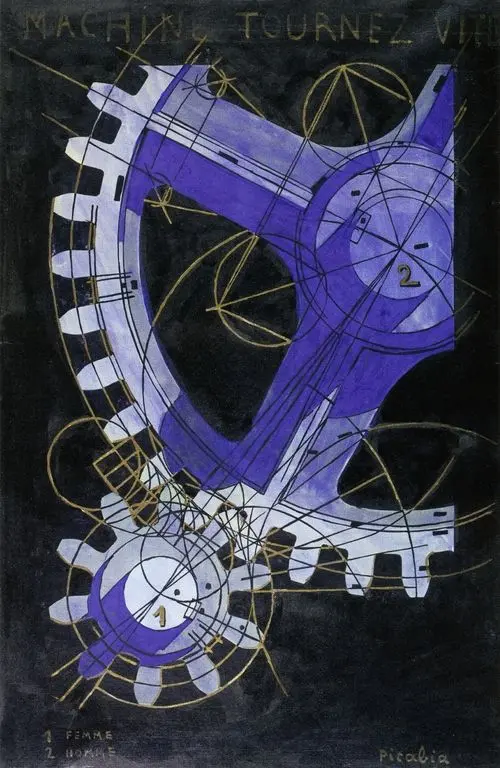

Scegli una data: appariranno evento, relazione e limite causale.
01 · Prima di sapere
È una macchina
o un ritratto?
Niente autore, titolo o movimento. Riconosci ruote, lettere e frecce; poi chiediti perché il significato continui a sfuggire.
Sto osservando qualcosa costruito per essere capito oppure un’immagine che mette in crisi il mio bisogno di capire?

Scegli una zona
Un marcatore separa materiale, disposizione, parola e funzione attesa. Non fornisce ancora una spiegazione.
02 · La soglia dal Futurismo
La macchina prometteva il futuro.
Ora viene interrogata.
Il Futurismo tenta di trasformare velocità, urto e ambiente in forma. Dada smonta il linguaggio moderno e l’autorità che pretende di garantirne il senso. Non sono due blocchi opposti né una successione inevitabile.
Distingui le operazioni
Scegli un’operazione: il problema non è passare dalla ragione alla follia, ma criticare una razionalità ridotta a dominio e disciplina.
03 · Il mondo dopo la promessa del progresso
La catastrofe radicalizza la crisi.
Non decide la forma.
Tra 1914 e 1945 guerra, rivoluzione, psicoanalisi, colonialismo, media, repressione ed esilio modificano esperienze e possibilità. Gli artisti costruiscono risposte differenti.
Rete delle condizioni
Attiva un nodo: una condizione rende possibile un’azione, ma non la produce automaticamente.
04 · Dada non è un luogo solo
Sei città.
Nessuna ricetta comune.
Scegli una città per confrontare contesto, media, politica, pubblico e contraddizioni.
05 · Il linguaggio si rompe
Il caso non elimina l’autore.
Gli toglie il controllo assoluto.
Poesia fonetica, impaginazione, frammenti di giornale e performance mettono alla prova parole già logorate da slogan, propaganda e ordini.
Laboratorio del caso regolato
Costruzione didattica originale; non imita una poesia o un collage storico.
Seleziona almeno tre frammenti.
La regola viene prima del risultato: anche quando l’ordine è casuale, scelta dei frammenti, quantità e cornice restano decisioni.
06 · Il ready-made
Chi decide
che cosa è arte?
Duchamp sposta il problema dall’abilità manuale alla scelta, al titolo, alla firma, al contesto, alla documentazione e all’istituzione. Ma non basta decretare che “qualsiasi cosa è arte”.
Caso necessario, immagine non locale
Duchamp, Fountain, 1917
L’originale fu rifiutato, fotografato da Alfred Stieglitz e poi perduto; repliche successive, fotografia, pseudonimo “R. Mutt”, racconto storico e riconoscimento museale non sono la stessa cosa.
07 · Collage e fotomontaggio
La realtà viene usata
contro se stessa.
Frammenti già prodotti da stampa, pubblicità e propaganda diventano materiale critico. Il montaggio non è un documento neutrale: taglia, scala, accosta e dirige.
CORPOMACCHINASTAMPA1920ORDINE?
Scegli un autore: materiale condiviso non significa identità di bersaglio, ritmo o posizione politica.
Il fotomontaggio di Höch Cut with the Kitchen Knife… è studiato tramite la scheda ufficiale degli Staatliche Museen zu Berlin ↗; l’immagine non viene copiata perché l’opera resta protetta.
08 · Dal rifiuto alla ricerca di un’altra realtà
Il Surrealismo non “matura” Dada.
Cambia il problema.
A Parigi, rapporti fra Breton, Soupault, Aragon, Éluard, Picabia e Tzara diventano collaborazioni, processi simbolici e rotture. Nel 1924 il manifesto surrealista organizza una ricerca su automatismo, sogno, desiderio e trasformazione della vita.
09 · L’inconscio non è un dizionario di simboli
Un sogno raccontato
è già una costruzione.
Freud, ricezione francese e pratiche surrealiste non coincidono. Automatismo, associazione, condensazione e spostamento aprono procedure; selezione, revisione e interpretazione non scompaiono.
Senza titolo
10 · Surrealismi
Un nome comune.
Operazioni, identità e conflitti.
Automatismo, precisione illusionistica, frottage, fotografia, cinema, oggetto, scrittura e metamorfosi non formano uno stile unico. Le autrici entrano nella rete dei problemi, non in un riquadro laterale.
Scegli un nodo: genere, biografia e trauma non spiegano automaticamente una forma, ma partecipazione, autorità e canone non sono neutrali.
Autrice, soggetto, collaborazione
La fotografia destabilizza maschile e femminile, forza e spettacolo, autoritratto e messa in scena. Attribuirla soltanto a una biografia cancellerebbe la precisione dell’operazione; chiamare Cahun soltanto “musa” cancellerebbe l’autorialità condivisa con Marcel Moore.
Molte artiste parteciparono realmente alle reti surrealiste e insieme subirono ruoli di musa, esclusioni e letture biografiche riduttive. Le due cose vanno tenute nello stesso quadro.
11 · Chi viene liberato?
Criticare l’Europa
non basta a decolonizzare lo sguardo.
I surrealisti contestano l’imperialismo e l’Esposizione coloniale del 1931, ma collezionano e ricontestualizzano oggetti extraeuropei dentro categorie occidentali come “primitivo”, feticcio e meraviglioso.
Classificatore delle fonti
Connessioni, non esportazione
Aimé e Suzanne Césaire, Wifredo Lam e le trasformazioni caraibiche non sono appendici di Parigi. Traducono, contraddicono e ricombinano Surrealismo, anticolonialismo, Négritude, memoria della schiavitù e culture locali.
La contro-esposizione La vérité sur les colonies mostra una solidarietà politica reale; mercato e appropriazione mostrano il limite. Una posizione critica può essere insieme feconda e contraddittoria.
12 · Rivoluzione, autorità ed esilio
Liberare il desiderio.
Organizzare un gruppo.
Il Surrealismo cerca di trasformare vita e politica, entra in tensione con comunismo e stalinismo, produce espulsioni e autorità interne; fascismo, nazismo e guerra impongono censura, persecuzione ed esilio.
Sequenza critica
Apri i passaggi nell’ordine: libertà proclamata, disciplina scelta e persecuzione esterna non sono la stessa cosa.
Inizia dalla dichiarazione di libertà. La contraddizione non annulla il progetto: obbliga a giudicarne pratiche e responsabilità.
Soglia verso il modulo 20
Quando il potere occupa le immagini
Se le avanguardie hanno mostrato che immagini, parole e oggetti possono modificare la realtà, che cosa accade quando il potere politico usa quella stessa capacità per organizzare consenso, obbedienza e persecuzione?Entra nel modulo 20
Le tecniche delle avanguardie non producono automaticamente i totalitarismi: il nuovo modulo studia gli apparati politici che ne trasformano funzioni e scala.
13 · Ritorno all’opera iniziale
Ora riconosci il gesto.
Non chiuderne il senso.
La tua prima ipotesi
Non hai ancora scritto un’ipotesi iniziale.
Sintesi fondata sulle tue azioni
Dada e Surrealismo non sostituiscono la ragione con il caos. Mettono alla prova una razionalità divenuta tecnica di dominio e cercano procedure per restituire possibilità a linguaggio, desiderio e vita. Ma anche la liberazione costruisce regole, istituzioni e responsabilità.
Verifica finale
Sedici nuclei.
Tutti irrinunciabili.
Nessuna media: il percorso si completa quando ogni nucleo è compreso, anche attraverso il recupero.
0 / 16 nucleiIl completamento richiede 16 / 16
Tutti i nuclei sono compresi.
Hai distinto critica della ragione e culto dell’irrazionale, caso e assenza di decisione, sogno e immagine costruita, liberazione e nuove autorità.
Fonti
Opere, documenti, limiti.
Il registro distingue opera, riproduzione digitale, licenza, fonte contemporanea, ricostruzione e interpretazione.
Apri il registro completo delle fonti
Immagini locali soltanto con condizioni documentate. Nessuna immagine generata imita un artista; nessun testo storico protetto viene riprodotto integralmente.